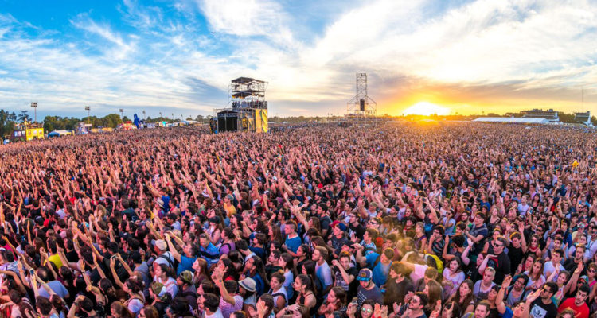
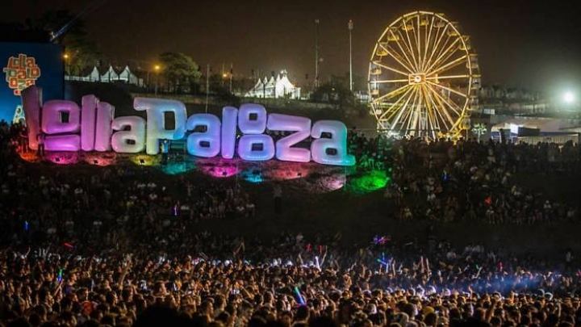
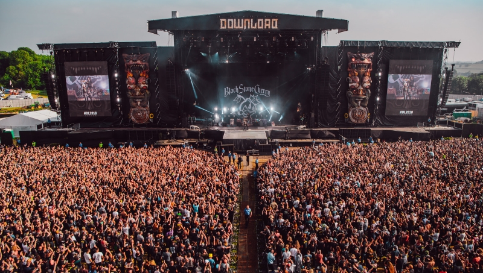
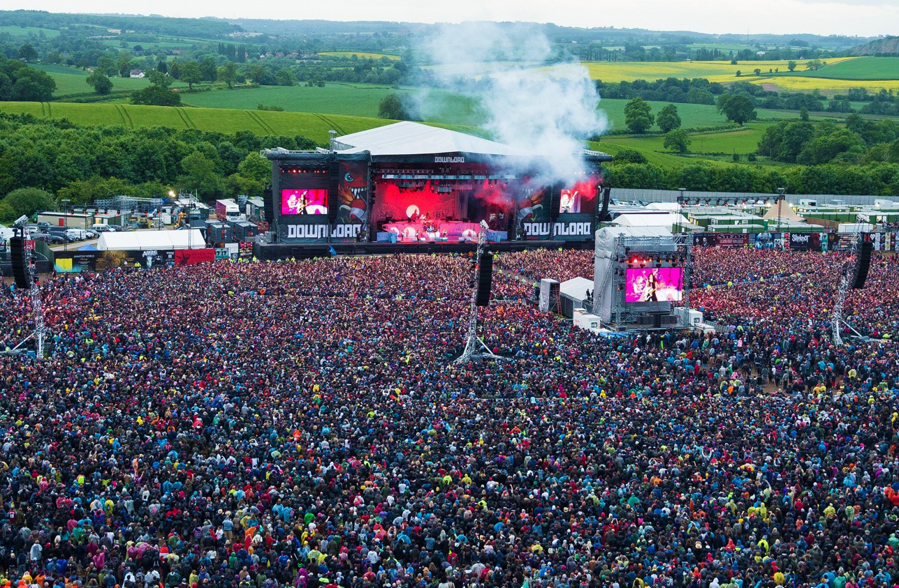
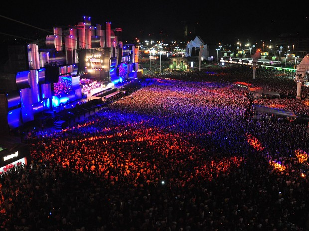
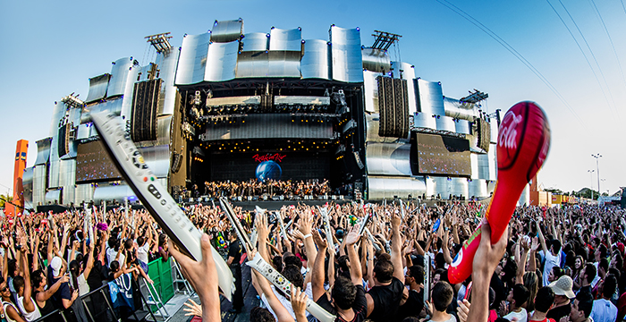
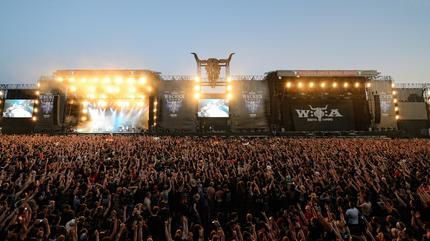
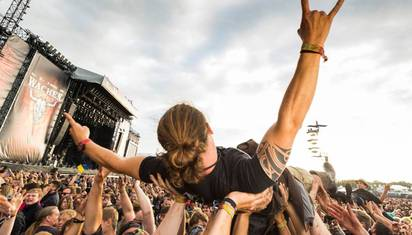
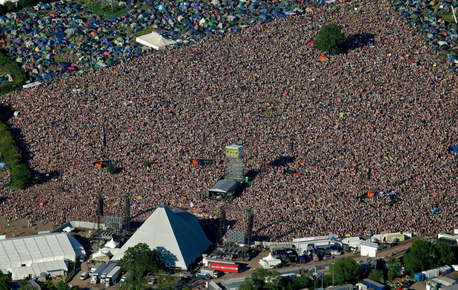
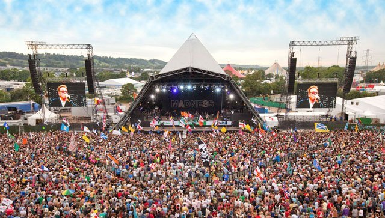

Nos dias 15, 16 e 17 de agosto de 1969, ocorreu, na fazenda pertencente a Max Yasgur, nas imediações da cidade de Bethel, Estados Unidos, um dos maiores festivais de música da história, o Woodstock. O festival possuía um vínculo direto com a Contracultura que se desenvolveu exponencialmente nos anos 1950 e 1960 e, sobretudo, com o principal eixo contracultural, o Movimento Hippie.O Woodstock representou o ápice dessa era contracultural.A proposta era oferecer ao público interessado (a maioria esmagadora de hippies) um festival de três dias completamente voltado ao rock e às práticas contraculturais adjacentes.Cerca de 400.000 pessoas foram ao Woodstock.O Woodstock impulsionou os festivais de rock,que hoje em dia acontecem no mundo todo e reunem milhares de pessoas de todos os lugares.
Lollapalooza é um festival de música alternativa que acontece anualmente, é composto por gêneros como rock alternativo, heavy metal, punk rock, grunge e performances de comédia e danças, além de estandes de artesanato. Também fornece uma plataforma para ONG’s e grupos políticos sem fins lucrativos. O festival foi idealizado por Perry Farrell (vocalista do Jane’s Addiction).
 Download Festival é um festival de rock britânico, que acontece anualmente no Donington Park, em Leicestershire na Inglaterra desde 2003. O festival foi inspirado no antigo Monsters of Rock, lendário festival de rock que ocorria em Donington durante a década de 80.
 O Rock in Rio é um festival de música idealizado pelo empresário brasileiro Roberto Medina pela primeira vez em 1985, sendo, desde sua criação, reconhecidamente, o maior festival musical do planeta. Foi o primeiro festival de rock a trazer bandas de renome mundial como Queen, Scorpions, Whitesnake e Iron Maiden. A primeira edição do festival aconteceu em 1985 e foi o ponta pé inicial para tornar o Brasil destino obrigatório para as turnês mundiais das maiores bandas de rock do mundo.
 O WOA é um festival de heavy metal que acontece no verão ao ar livre. Ele ocorre anualmente na pequena vila de Wacken, em Schleswig-Holstein, norte da Alemanha. A primeira edição do festival aconteceu em 1990 e envolveu apenas bandas relativamente desconhecidas alemãs. Atualmente, o casting costuma ser formado principalmente por conjuntos da Escandinávia e da Europa em geral, mas bandas brasileiras, australianas e americanas, dentre outras, também já estiveram presentes.
 O Festival de Glastonbury, oficialmente Glastonbury Festival of Contemporary Performing Arts, é o segundo maior festival de música a céu aberto do mundo. O festival nasceu em 1970, um dia depois da morte de Jimi Hendrix. Uma das principais características do festival é sua essência hippie.
 